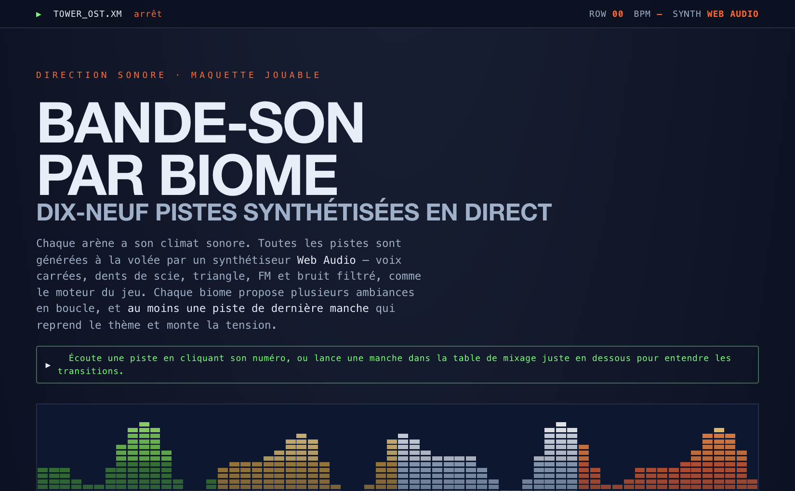

Open this file in a recent browser (Chrome / Firefox / Safari) on a wide screen. Navigation: Space or → to advance, ← to go back.
📺 Tower Duel — booting · brown bag
the making-of a game — from the first line to the fireworks
host: Aymeric Gerlier
the lobby · 2 players
One drives, one builds. Let's start the match.
The spark
The real goal: learning agentic AI on a real project, with real constraints.
🎮
Tower Duel — 2 players, aim at the same time, fire together.
Chapter 1 · the brief
The founding decision
The best prompt isn't code. It's a plan. Four batches, smallest-playable first:
Anatomy of the founding prompt — the real brief, in 5 parts
“Old-school artillery duel in Phaser — 2 players, tower + cannon, set power & angle, wind per volley. Both aim at the same time, then fire together.” ← role + the twist
“Glossary: tower · cannon · volley · round · wind · biome — one word, one meaning. Code in English, talk in French.” ← static → system prompt (cache)
“Build in 4 batches, smallest-playable first: 1) docker · 2) biomes+FX · 3) TV + phone controllers · 4) destructible terrain.” ← order matters
“Sim pure & separate from rendering. Done = a full round via docker compose up.” ← acceptance criteria
“One commit per batch, validated before the next. Don't break local play.” ← restate key rules at the end
Batch 1
A minimal but complete core, containerized from day one — playable right away.
“Bootstrap Tower Duel: Phaser (pin the version), one HTML page, dockerized. Core loop only — 2 towers + a cannon each, set angle & power, wind shifts each volley, both lock then fire together, show score. Keep the sim pure & separate from rendering. Done = a full round playable via docker compose up.”
Batch 2
Identity: visual themes, parallax, synthesized sound. It stops being a prototype.
“Add biomes, chosen before the match (meadow/desert/tundra/volcano): per-biome sky gradient, parallax mountains, ambient particles. Synthesize every SFX in code (WebAudio) — zero asset files. Keep it data-driven: one config object per biome, so I can add a 5th later without touching logic.”
Batch 3
WebSocket architecture: spectator screen, phone-controllers, reconnection. The technical leap.
“Refactor to a WebSocket app, 3 roles: a TV that only spectates (never renders controls), phones = the 2 players' controllers, PC = host or join. Handle reconnection (resume a seat). Fire only once both have locked. Don't break single-machine local play.”
Batch 4
Gameplay depth: the scenery crumbles under fire. The initial promise is kept.
“Make terrain destructible, Worms-style: shells carve craters; the relief blocks shots like the scenery. Run it in the authoritative sim (server-reusable), not the renderer. Add a toggle so I can A/B it on/off mid-match.”
Chapter 2 · the method
Then iteration
Turbo, stackable shields, first-to-N matches, local 2-player mode, a storm round, a living battlefield…
The making-of, by the numbers
My toolbox
…and then the principles that make them work.
Technique 1
Frame the work in big batches before coding. AI is brilliant at sprints, lost in an unmarked marathon.
Technique 2
Explore an idea in a throwaway branch, keep the good one, discard the rest — without polluting the main thread.
“Throwaway spike — don't touch main. Replace per-volley wind with a continuous eased gust (~10s period, smoothstep). Wire it just enough to feel in a match — no refactor, no docs, no tests. I'll judge the feel, then we keep it or bin the branch.”
Technique 3
I have the AI generate the tool that lets me decide — I choose from evidence, not blind.
<task> generate a standalone ost-lab.html (no deps).
<spec> one panel per biome · sliders (tempo, layers, reverb) · playing live.
<output> a Copy-preset button → JSON — I tune by ear, paste, commit.

The artefact constellation
My build loop · Lean
One hypothesis per lot
Prioritization picks the single main bet of each lot/iteration. I build the fastest possible test of it — usually a throwaway simulator.
Realign from the imprint
The implementation leaves an imprint in the code. I re-aim the AI's instructions from it → stay on-spec, pilot the coding agent tighter.
How I drove it
“Run the full build + test suite in the background; ping me only on failure (failing test name + output). I'll keep working on the lobby flow meanwhile.”
Chapter 3 · why it works
The one idea everything hangs on
Customizing an AI = deciding what to give it. There's almost no other knob.
tower · cannon · volley · round · wind · biome — one word, one meaning. So code, screens & chat finally speak the same language.
Principle
Give it a linter, not formatting rules. Give it a way to check its own work: tests, types, build.
<task> self-check after every change.
<steps> run npm run lint · tsc · npm test → fix → re-run until all three are green.
<reminder> if a test looks wrong, propose a fix — don't delete it to pass. Paste the final output.
Principle
More frequent, sharper, argued — just like with a teammate. Formalize your standards.
“This factory + 2 subclasses has a single caller — speculative generality. Collapse to one class, inline it, delete the factory. Rule for next time: no abstraction before the 3rd real duplication.”
The economy
It's a budget
Context and the task share one window. More context = less room to work. Limits create performance — like fitting a whole game in a few KB.
Cache it
What you give first is cached — 10× cheaper. Stable first (CLAUDE.md, tools), volatile last. Breaks on: model switch · MCP change · compact · update.
The real shift
I decide, I frame, I validate, I refuse. The AI executes. The bottleneck moves: from the keyboard to judgment.
Holding the course
Persistent conventions so I don't re-explain everything — and regular reminders: simplify, capitalize.
Chapter 4 · the honest part
The machinery
Going further
Scar 1
The AI breaks what worked, goes in circles, reintroduces a bug it already fixed. Tests and version control are not optional.
Scar 2
By default it generates too much: needless abstractions, duplicated code. Simplicity has to be demanded.
Scar 3
Framing, reviewing, fixing: it takes time. The gain is real, but the illusion of an instant gain is expensive.
The golden rule
Verify everything that matters. Trust is earned, line by line, test by test.
Zoom out — what the data says
100k+ GitHub devs, followed past the code — to commits, projects, releases.
Why the value evaporates
Code is raw material. Value comes after: review, integrate, test, ship — then sell, distribute, get adopted. All still human.
Takeaways — the impact on your projects
Questions? And: which of your projects would you frame in batches?
Course: 1e1.github.io/tower-phaser · Let's connect: linkedin.com/in/agerlier